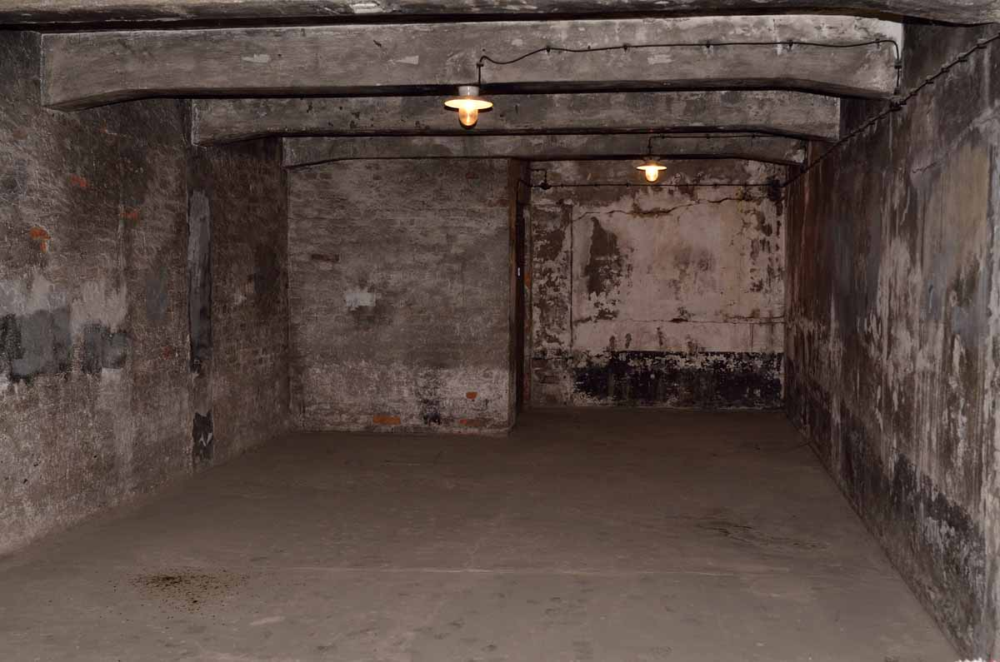

Life in the camps
The prisoners' day began at 4:30 am (an hour later in winter) with morning roll call. Dr. Miklós Nyiszli describes roll call as beginning 3:00 am and lasting four hours.
The weather was cold in Auschwitz at that time of day, even in summer. The prisoners were ordered to line up outdoors in rows of five and had to stay there until 07:00,
when the SS officers arrived. Meanwhile, the guards would force the prisoners to squat for an hour with their hands above their heads or levy punishments such as
beatings or detention for infractions such as having a missing button or an improperly cleaned food bowl. The inmates were counted and re-counted. The prisoners assigned to Mengele's staff slept in a separate barracks and were awoken at 07:00 for a roll call that only took a few minutes. Nyiszli describes how
even the dead had to be present at roll call, standing supported by their fellow inmates until the ordeal was over. When he was a prisoner in 1944–45, five to ten men were
found dead in the barracks each night. Anyone who was ill was sent to the hospital for a determination as to whether or not they would recover quickly; those who
failed this assessment were killed by lethal injection. Mengele made weekly visits to the hospital barracks and sent to the gas chambers any prisoners who had not
recovered after two weeks in bed.

After roll call, the Kommando, or work details, walked to their place of work, five abreast, wearing striped camp fatigues, no underwear, and ill-fitting wooden shoes
without socks. A prisoner's orchestra (such as the Women's Orchestra of Auschwitz) was forced to play cheerful music as the workers left the camp. Kapos were
responsible for the prisoners' behavior while they worked, as was an SS escort. The working day lasted 12 hours during the summer and a little less in the winter. Much of
the work took place outdoors at construction sites, gravel pits, and lumber yards. No rest periods were allowed. One prisoner was assigned to the latrines to measure the
time the workers took to empty their bladders and bowels.
Sunday was not a work day, but the prisoners did not rest; they were required to clean the barracks and take their weekly shower. Prisoners were allowed to write
(in German) to their families on Sundays. Inmates who did not speak German would trade some of their bread to another inmate for help composing their letters. Members
of the SS censored the outgoing mail.